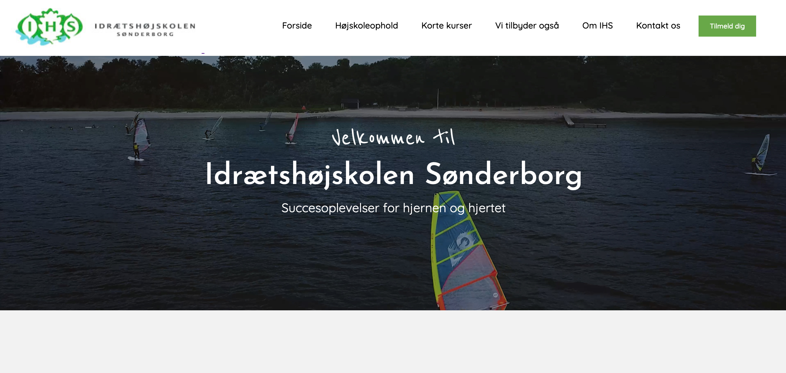
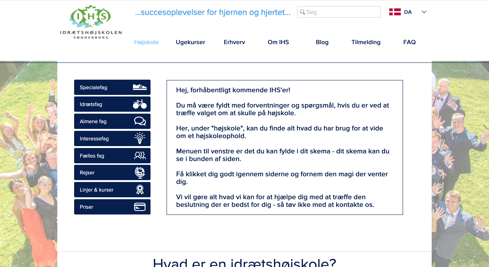

FOLK SCHOOL SØNDERBORG
This school project was made in collaborations with the Danish Folk School Sønderborg. Their websites was hard to navigate and it was hard to find the essential information. The assignment was to create good AI and lift the user experience in general.
Focus: CMS databases, Rest API, Information Architecture (IA), SEO
Visit: Folk School Sønderborg

The case
Sønderborg Folk School offers a wide range of courses in the field of sports. Their main focus is the 3-12 month courses, where the students reside on the school, but they also have shorter courses. Their website was hard to navigate, incoherent in design and they often received calls from confused, potential students. Our job was to create a responsive website, where you could easily find all essential information.
Information Architecture
IA is all about organizing and structure the content of the website in order to create good UI/UX. First thing, we made an inventory of all pages, subpages and the content. Next, we organized all content in a way that would be intuitive for the user. To do this we used Card Sorting, created content outlines, wireframes and developed a hifi-prototype. We also made a survey to gain more knowledge on what the target group (age 15 - 19) prioritize when they’re looking at Folk Schools.
The design
The design of the website needed a lift. With our first research in mind, we created a moodboard to set the tone of the design. We decided on using fresh, energizing colors, a simple and modern font, duotone pictures and incorporating icons to break down some information and to put focus on the school’s values. We tested the site before / after with a BERT test and succeeded in making a more interesting and manageable site for the user.
SEO
We tested the SEO on the original site and it fell trough on many points. We used Google’s keyword planner to find and incorporate important keywords on the site, using semantics when making our code and incorporating Video as this favorited by search engines. We used the Screaming Frog tool and made a Lighthouse test on the site before / after and saw a significant improvement.

CMS / Code
The frame for the website is build with HTML / CSS and Wordpress is used as our backend to store content in. We’ve placed the content in our HTML templates by fetching it as JSON by using WP Rest API. Using a Content Management System is a good way to store data and give the content editor (in this case - the school) an opportunity to add and edit content without having code knowledge.